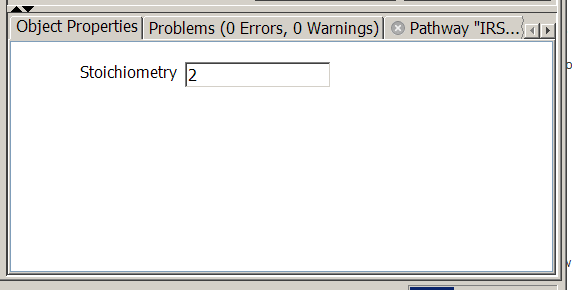

On selection of a reactant or product line in the reaction diagram, the stoichiometry properties panel appears and can be. used to edit the stoichiometric coefficient. The default setting is 1.

Edit the stoichiometric coefficient in the text field. Only positive integers are allowed; all other values are silently discarded.